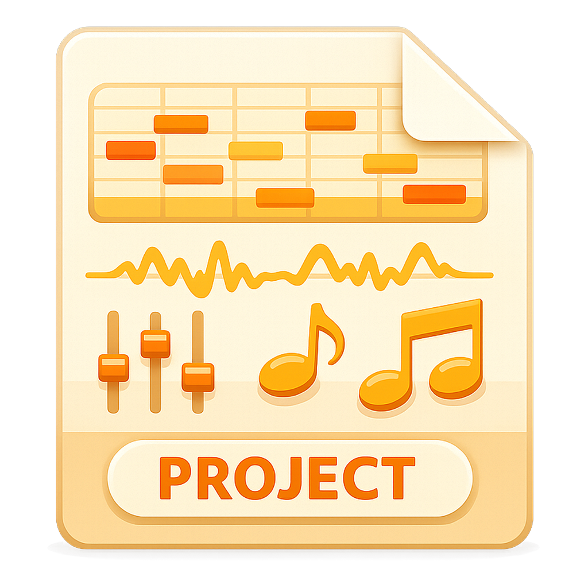

工程文件是橙色声波卡片，歌手文件是同色系的人声卡片——都是文件形状，靠里面的内容区分： 工程里是钢琴卷帘、波形、推子和音符；歌手里是一个戴耳机的侧脸、五线谱和一截人声波形。 歌手那张原图是白底，抠掉之后卡片右上角的折角仍是白的，所以抠图时只清除了"与画布边缘连通"的白色。

双击直接打开，恢复整首工程：分片、音高曲线、歌手指派都在里面。
双击直接进「歌手编辑」——预处理窗口带着音高、MIDI 和声线数据打开，保存写回原文件。
| 场景 | 系统怎么把文件交过来 | 应用的反应 |
|---|---|---|
| 应用没开，双击 .sxsproj | 路径在启动参数 argv 里 | 主窗口起来后加载该工程 |
| 应用没开，双击 .sxssinger | 同上 | 主窗口起来后直接进歌手编辑 |
| 应用已开，再双击一个文件 | Windows 起第二个进程，单实例锁把它交给已运行的实例（second-instance 带 argv）；macOS 走 open-file 事件 | 主窗口置前，然后打开该文件 |
| 连着点两个文件 | 两次投递 | 后一个覆盖前一个（以最后的意图为准） |
[Registry]）、
应用启动后的补注册（写 HKCU\Software\Classes，绿色版也能用）、以及系统"打开方式 → 始终使用"。
补注册只在键不存在、或本来就指向本程序时才写 —— 用户手动指定过别的程序，我们不去抢。
macOS 靠 Info.plist 的 CFBundleDocumentTypes，图标取 fileicons/*.icns。